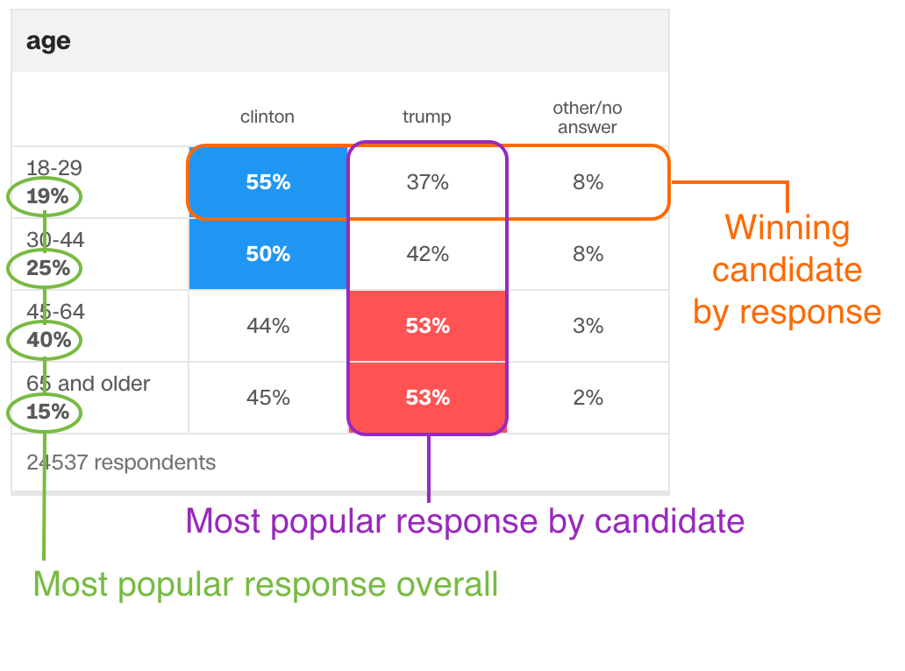

Electoral College results
Winning candidate by response
Most popular response overall
Most popular response by candidate
FAQ
|
Github repo
x
 Not all states had exit polls conducted, not every question was asked in every state. A grey state means insufficient data.
Legend: